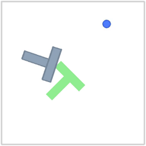
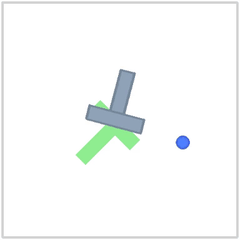
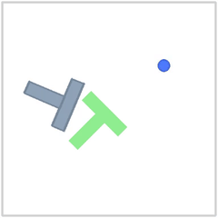

Under a small budget of demonstrations, does aggressive regularization buy sample-efficiency for imitation-learning policies?
Imitation learning is data-scarce by nature: every demonstration is a human teleoperating the robot — slow and expensive. So the field gains a lot from policies that reach the same performance with fewer demos. Inspired by Konwoo et al. on data-constrained pre-training, this study asks whether aggressive regularization buys that data-efficiency — and, crucially, whether it helps most when data is scarce.
The task is PushT: a Diffusion Policy pushes a T-block onto a target. Trained & evaluated on AMD ROCm (Radeon AI PRO R9700).
| Demos | Standard | Enhanced | Δ |
|---|---|---|---|
| 200 data-rich | 29% | 29% | 0 pts |
| 100 data-scarce | 8% | 19% | +11 pts |
Preliminary evidence suggests that, under a 100-demo budget, enhanced regularization improves success from 8% to 19% (+11 pts), while showing no gain at 200 demos (29% = 29%). Consistent with regularization helping most when demonstrations are scarce. Single seed — a strong signal, not yet a settled claim.
Real evaluation rollouts. The pusher (blue) drives the grey block onto the green target; episodes end the instant coverage crosses 95%.



standard = LeRobot defaults. enhanced = weight decay 1e-3 + image-transform augmentation.
Honest scope: single seed, one GPU, and a baseline that plateaus below the published reference (~65%) — the remaining gap is batch size (8 vs ~64). Enough to show the signal, not yet to publish.
Sous un petit budget de démonstrations, la régularisation agressive achète-t-elle de l'efficacité-donnée aux politiques d'imitation ?
L'imitation est data-scarce par nature : chaque démo, c'est un humain qui téléopère le robot — lent et coûteux. D'où l'intérêt de politiques qui atteignent la même performance avec moins de démos. Inspirée de Konwoo et al. (pré-entraînement sous contrainte de données), cette étude demande si la régularisation agressive achète cette efficacité — et surtout si elle aide le plus quand les données sont rares.
La tâche est PushT : une Diffusion Policy pousse un bloc en T sur une cible. Entraînée & évaluée sur AMD ROCm (Radeon AI PRO R9700).
| Démos | Standard | Enhanced | Δ |
|---|---|---|---|
| 200 data-rich | 29% | 29% | 0 pt |
| 100 data-scarce | 8% | 19% | +11 pts |
Évidence préliminaire : sous un budget de 100 démos, la régularisation enhanced améliore le succès de 8% à 19% (+11 pts), sans gain à 200 démos (29% = 29%). Cohérent avec l'idée que la régularisation aide surtout quand les démonstrations sont rares. Un seul seed — signal fort, pas encore une revendication établie.
Vraies vidéos d'évaluation. Le pousseur (bleu) amène le bloc gris sur la cible verte ; l'épisode s'arrête dès que le recouvrement dépasse 95%.
standard = défauts LeRobot. enhanced = weight decay 1e-3 + data augmentation.
Portée honnête : un seed, un GPU, une baseline sous la référence publiée (~65%) — l'écart restant = le batch size (8 vs ~64). Assez pour montrer le signal, pas encore pour publier.